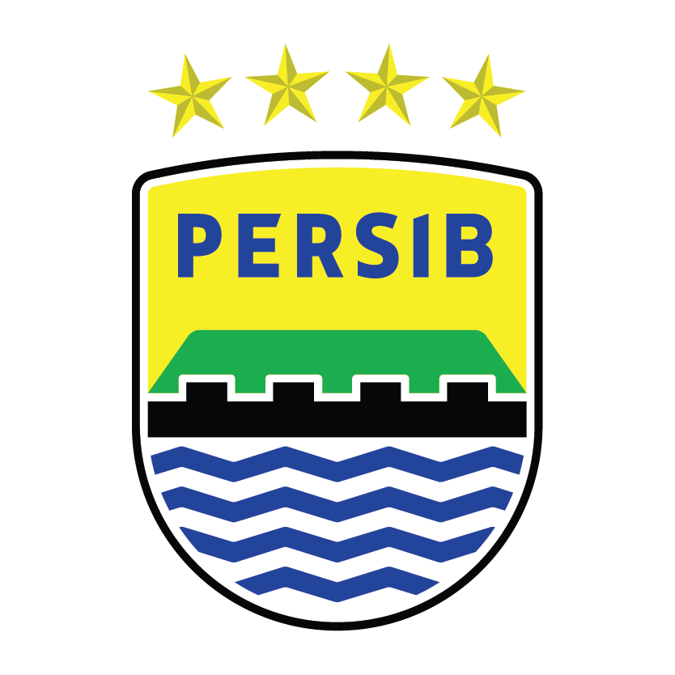

Maung Bandung Kebanggaan Jawa Barat

PERSIB Bandung adalah salah satu klub sepak bola terbesar dan paling populer di Indonesia. Klub ini berasal dari Kota Bandung, Jawa Barat dan memiliki julukan Maung Bandung. PERSIB didirikan pada tanggal 14 Maret 1933 dan menjadi kebanggaan masyarakat Jawa Barat.
PERSIB memiliki sejarah panjang dalam dunia sepak bola Indonesia dan telah meraih banyak prestasi bergengsi. Klub ini juga mempunyai pendukung setia yang disebut Bobotoh, yang terkenal sangat fanatik dan selalu mendukung tim di setiap pertandingan.
Dengan semangat, kerja sama tim, dan dukungan suporter yang luar biasa, PERSIB Bandung terus berkembang menjadi salah satu klub terbaik di Indonesia.